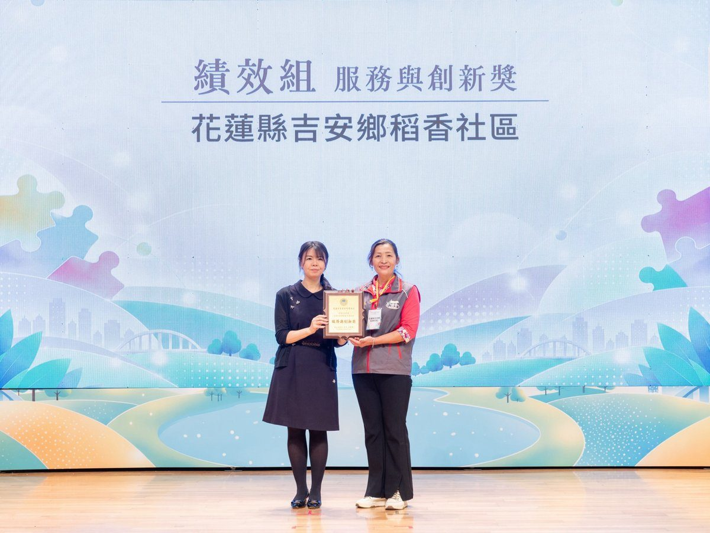

稻香社區奪中央服務與創新獎 游淑貞肯定女力翻轉

可樂電子報小編/編輯
衛生福利部於日前舉辦「115年度全國社區發展金卓越社區表揚典禮」，表揚全國社區發展績優團隊。吉安鄉稻香社區發展協會憑藉「女力培力」、「數位平權」及「客家庄文化傳承」等創新成果，從全國參選社區中脫穎而出，榮獲績效組「服務與創新獎」。此次由吉安鄉公所團隊陪同社區發展協會代表前往受獎，肯定地方長期深耕社區的努力，也展現公私協力推動永續發展的成果。

衛福部自107年起辦理「社區發展工作－金卓越社區選拔計畫」，鼓勵各地健全組織運作、推動福利服務，實現社區永續發展願景。今年北區共有53個社區參與選拔，各個社區成果皆相當豐碩。衛福部呂建德政務次長也在致詞時期勉社區夥伴持續發揮熱忱，實踐「幸福共好，作伙向前」精神，攜手打造更多幸福社區。
稻香社區於112年在吉安鄉公所輔導下啟動組織重整，由原家政班成員徐淑娥接任理事長，推動「女力傳承・文化共融」、「新住民小旗艦」等計畫，並於113年爭取承接教育部「吉安數位機會中心（DOC）計畫」，開創社區服務創新模式。

徐淑娥理事長帶領居民重新投入公共事務，以婦女培力為核心，推動跨世代、跨族群共學，透過老幼共學及志工培訓，讓居民從服務接受者轉變為文化傳承者與社區貢獻者，凝聚共好力量。例如「玉環阿嬤」原本只是參加活動的社區長輩之一，現在成為傳承客家美食手藝的「小老師」；家政班成員的「瑜虹阿姨」，從一開始不敢上臺講話，如今成為防暴宣講師。她們不僅累積了服務能力，更找回自信與活力。
今年稻香社區先於吉安鄉公所辦理的115年社區發展工作評鑑中勇奪第一名，獲頒2萬元獎金，隨後代表吉安鄉參加花蓮縣政府115年度社區發展工作評鑑，再獲卓越組優等及10萬元獎金，如今榮獲中央表揚「服務與創新獎」，努力受肯定。徐淑娥表示，這份榮耀是對志工團隊長期付出的鼓勵，未來將持續以「女力扎根、文化永續、數位共融、幸福共生」為願景，打造兼具文化溫度與科技創新的幸福家園。

鄉長游淑貞為社區蓬勃發展、深化社福服務展現豐碩成果感到欣喜表示，公所長期深耕社區發展，七度參與花蓮縣社區評鑑，累計獲得6次優等、1次甲等，並持續輔導各社區爭取中央及縣級評鑑佳績。感謝縣府、社區志工夥伴及民間資源投入，未來將持續陪伴社區發展特色、志工培力，提升服務量能，攜手打造樂活鄉城、共創幸福花蓮。
🌟 掌握花蓮在地第一手資訊・歡迎訂閱追蹤
深度紀實報導、在地精采影音專題，第一時間接收最新消息！